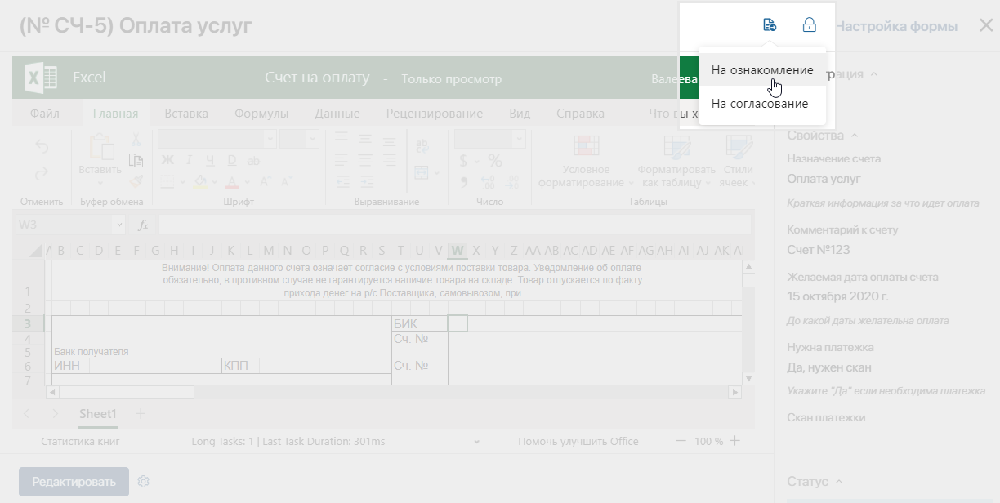
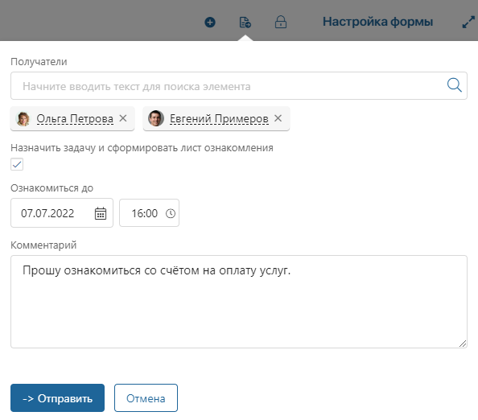
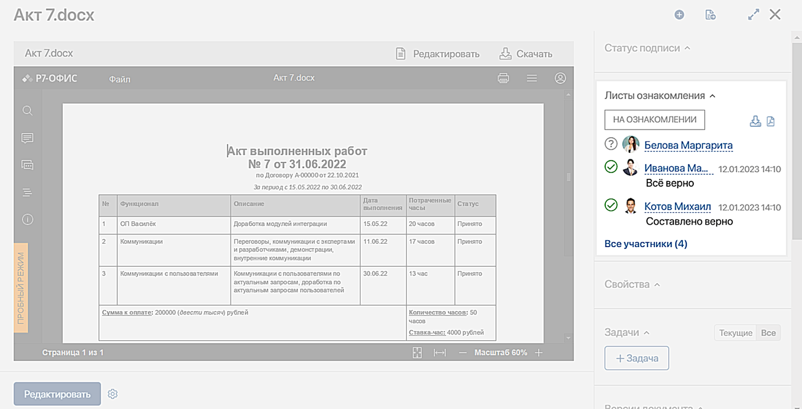
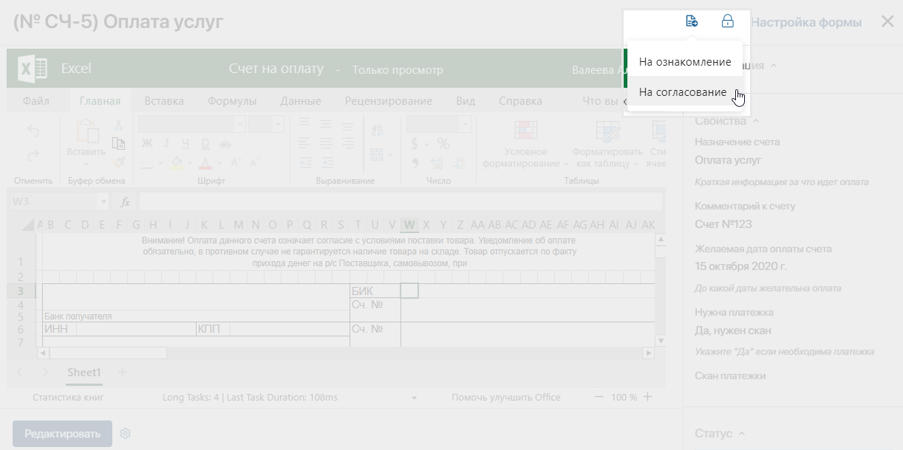
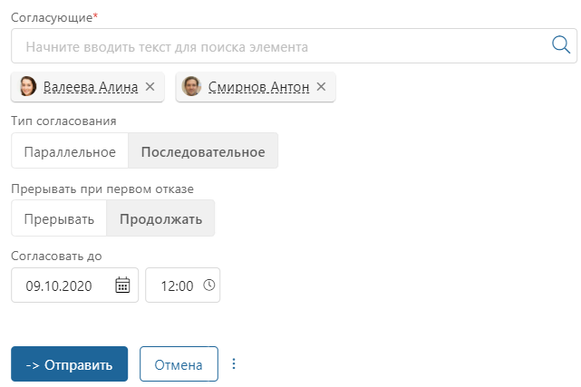
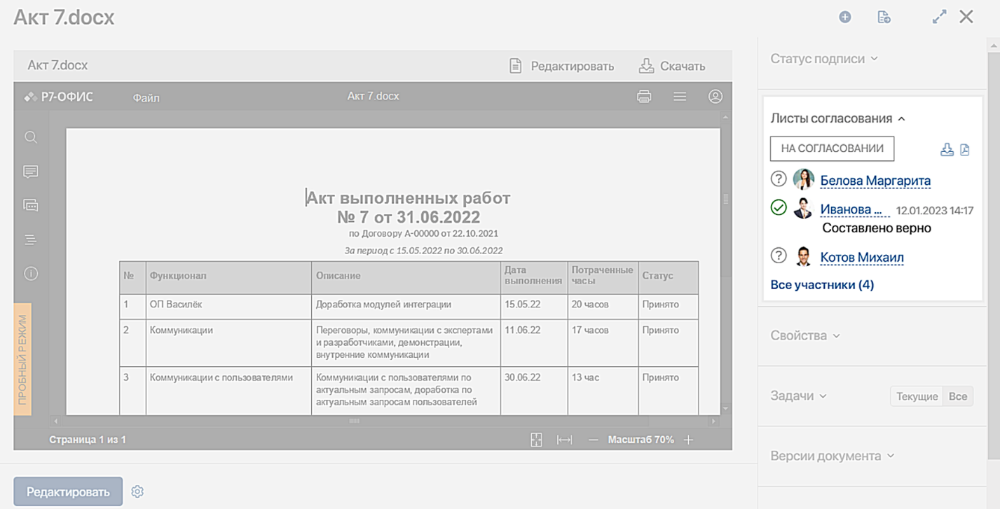

В ELMA365 вы можете отправлять на согласование или ознакомление коллегам файлы и документы, добавленные в элементы приложения.
В этой статье описаны преднастроенные маршруты ознакомления и согласования, по которым можно отправить элемент приложения с его карточки.
Также вы можете создать пользовательский бизнес-процесс обработки документов и настроить маршрут, например, сгенерировать файлы по шаблону, сформировать пакет документов, подписать их через Диадок, а затем зарегистрировать. Подробнее о том, как создать автоматизированный маршрут читайте в статье «Моделирование маршрута документа».
Ознакомление с документом
Предположим, нормативные документы, распоряжения и инструкции хранятся в отдельном приложении. При приёме на работу новые сотрудники должны с ними ознакомиться. Руководитель предоставляет в отдел кадров информацию, подтверждающую факт рассмотрения документов.
В ELMA365 доступна отправка документов, хранящихся в элементах приложений, на ознакомление пользователям. При этом формируется лист ознакомления, в котором фиксируется информация обо всех сотрудниках, прочитавших документ.
На ознакомление отправляется определённая версия документа. Во время выполнения процесса можно отслеживать изменения в документе. Если они внесены, текущий лист можно отправить в архив. Для этого администраторы задают для каждого приложения правила архивации листов ознакомления. В настройках определяется, какие свойства документа могут быть отредактированы пользователями в процессе.
Если лист заархивирован и сотрудник выполнит задачу ознакомления, процесс прервётся. В карточке документа рядом с листом отобразится статус Отменено. Поскольку заархивированный лист ознакомления нельзя восстановить, процесс по документу запускается повторно.
Отправить документ на ознакомление
Чтобы передать документ на ознакомление, выполните следующие действия:
- В верхней части страницы нажмите на значок и выберите опцию На ознакомление.

- В открывшемся окне заполните поля:

- Получатели — вы можете указать сразу несколько человек в качестве получателей. Для этого нажмите на значок лупы и выберите пользователей из списка или начните вводить имя в поле поиска;
- Назначить задачу и сформировать лист ознакомления — выбранные пользователи получат новую задачу ознакомления во Входящие, а на панели справа от файла появится раздел Лист ознакомления. По умолчанию эта опция включена. Если вы снимете флажок, выбранные пользователи получат в #ленту оповещение, содержащее ссылку на файл. При этом лист ознакомления не сформируется;
- Ознакомиться до — вы можете задать срок ознакомления, указав дату и время. В календаре исполнителя появится задача ознакомления, если в его профиле включена опция создания события;
- Комментарий — укажите дополнительную информацию к файлу или задаче.
- Нажмите кнопку Отправить.
В #ленте исполнителей отобразится уведомление о назначении задачи рассмотрения документа.
В карточке документа сформируется Лист ознакомления со списком всех участников процесса. Рядом с именем пользователя, который ещё не рассмотрел документ, отображается вопросительный знак. Выполнившие задачу сотрудники отмечаются значком галочки. Оставленный при ознакомлении комментарий или загруженный файл, поясняющий решение, добавляются в лист ознакомления. 
Вы можете загрузить лист на компьютер. Для этого справа от резолюции нажмите значок:
- — для экспорта файла формата .xlsx;
- — для экспорта файла формата .pdf. Значок отобразится, если используется пользовательский шаблон для формирования листа.
Подробнее о работе с листами читайте в статье «Листы ознакомления и согласования документов».
Согласование документа
Эту опцию удобно использовать, когда в компании принято, что руководитель или старший сотрудник утверждают документ перед тем, как он будет принят в работу или отправлен клиенту. Например, прежде чем выставить счёт клиенту, менеджер по продажам согласовывает его с руководителем отдела. При этом вся информация о согласующих и их резолюциях записывается в карточку документа.
На согласование отправляется определённая версия документа. Участники процесса могут отслеживать изменения документа и актуальность текущего листа согласования. Для этого администраторы для каждого приложения могут задать правила архивации листов согласования при редактировании документа. В настройках определяется, какие свойства документа доступны для редактирования без отправки листа в архив.
Если лист заархивирован, он является неактуальным. Для продолжения процесса согласования пользователь с правами на редактирование документа должен вернуть лист из архива. Если этого не сделать, процесс прервётся, когда один из сотрудников вынесет резолюцию в задаче. В карточке документа рядом с листом отобразится статус Отменено.
Отправить документ на согласование
Чтобы запустить документ по маршруту согласования, выполните следующие действия:
- Откройте карточку элемента. В правом верхнем углу нажмите значок и выберите На согласование.

- Если документ отправляется одному согласующему, выберите имя из выпадающего списка и нажмите Отправить.
- Когда документ будут рассматривать несколько человек, необходимо задать логику согласования:

- Укажите исполнителей задачи согласования.
- Выберите тип согласования:
- Параллельное — документ отправляется на рассмотрение одновременно всем сотрудникам, указанным в поле Согласующие*. Выберите эту опцию, если последовательность согласования не имеет значения.
- Последовательное — документ отправляется на рассмотрение сначала одному сотруднику, а после того как он примет решение — другому. Процесс согласования не продвигается, пока первый сотрудник не примет решение по документу.
начало внимание
Сотрудники получают документ на рассмотрение в той последовательности, в которой заполнялось поле Согласующие*.
конец внимание
- Определите поведение системы при первом отказе:
- Прерывать — после того как кто-то не согласует документ/элемент приложения, процесс будет прерван, а в документе/элементе приложения появится резолюция Отказано.
- Продолжать — даже если кто-то из сотрудников не согласует документ/элемент приложения, процесс продолжится, но будет вынесена резолюция Отказано.
- После определения логики согласования укажите дату, до которой нужно рассмотреть документ.
- Нажмите кнопку Отправить.
После этого:
- в #ленту всех согласующих придёт уведомление о назначении задачи рассмотрения документа;
- исполнитель получит оповещение о задаче согласования на электронную почту, если в его профиле включена опция согласования через email. В письме он сможет ознакомиться с документом и вынести резолюцию, не переходя в ELMA365;
- в календаре согласующего отобразится назначенная задача, если в его профиле включена опция создания события.
После постановки задачи согласования в карточке документа появится новый раздел — Лист согласования. В нём представлен список согласующих с их резолюциями, комментариями и прикреплёнными при выполнении задачи файлами. Пока пользователь не примет решение, рядом с его именем отображается вопросительный знак.

Лист согласования можно загрузить на компьютер. Для этого справа от резолюции нажмите значок:
- — для экспорта файла формата .xlsx;
- — для экспорта файла формата .pdf. Значок отобразится, если используется пользовательский шаблон для формирования листа.
Подробнее о том, где отображаются резолюции и как с ними можно работать, читайте в статье «Листы ознакомления и согласования документов».